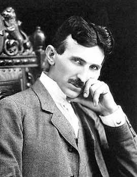

นิโคลา เทสลา(Nikola Tesla):

นิโคลา เทสลา เป็นนักวิทยาศาสตร์ชาวโครเอเชีย สัญชาติอเมริกัน เกิดเมื่อวันที่ 10 กรกฎาคม ค.ศ. 1856 (พ.ศ. 2399) และเสียชีวิตเมื่อวันที่ 7 มกราคม ค.ศ. 1943 (พ.ศ. 2486) ในขณะที่มีอายุ 86 ปี โดยมีฉายาว่า "นักประดิษฐ์ที่โลกลืม" เพราะเป็นนักประดิษฐ์คนสำคัญแต่กลับมีน้อยคนที่รู้จัก หรือถูกรู้จักในฐานะนักวิทยาศาสตร์เพี้ยนจากการที่เขามีปัญหาในการเข้าสังคม มากกว่าจะสนใจผลงานของเขาที่ยิ่งใหญ่ไม่แพ้คนอื่น ๆ ซึ่งเขาเป็นผู้ประดิษฐ์ขดลวดเทสลา หรือ Tesla coil ซึ่งเป็นหม้อแปลงที่สามารถสร้างแรงดันไฟฟ้าสูง แถมยังเป็นผู้ค้นพบวิธีการเปลี่ยนสนามแม่เหล็กเป็นสนามไฟฟ้า จึงเป็นที่มาของหน่วยวัดสนามแม่เหล็กเทสลา อีกทั้งยังเป็นผู้ค้นพบวิธีการสื่อสารแบบไร้สายอีกด้วย